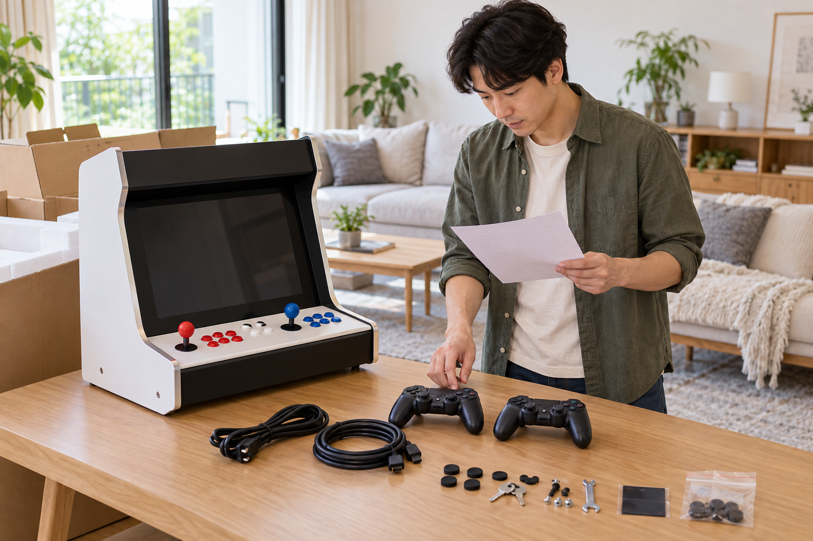
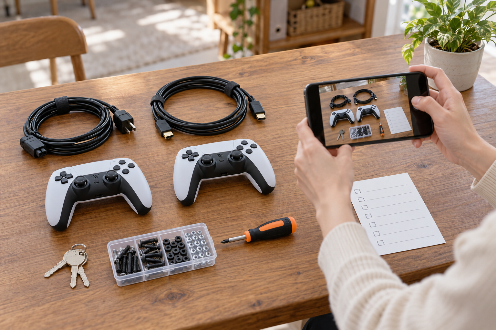

가정용 오락기의 구성품은 주문 내역에 적힌 제품명과 선택 옵션을 기준으로 확인해야 합니다. 포장을 모두 열어 본체와 전원 관련 부품, 화면 연결 부품, 조작 관련 부품, 별도 구매품을 나누어 놓고 수량과 모양을 대조하세요. 빠졌거나 용도를 모르는 부품은 바로 연결하지 말고 사진과 주문 정보를 준비해 판매자에게 확인하는 편이 안전합니다.

주문 내역의 제품명과 옵션부터 확인하세요
주문서나 결제 내역에서 정확한 제품명, 선택 옵션, 추가 상품을 먼저 찾으세요. 같은 가정용 오락기라도 판매 구성과 선택 옵션에 따라 함께 오는 물품이 다를 수 있으므로 다른 구매자의 사진이나 비슷한 모델을 기준으로 판단하지 않는 편이 좋습니다. 상자를 열기 전 제품 표시와 포장 상태를 찍고, 꺼낸 물품은 주문 내역과 같은 순서로 놓으면 대조하기 쉽습니다.
구성품 확인의 기준은 비슷해 보이는 다른 제품이 아니라 내가 주문한 제품명과 선택 옵션입니다.
설치 뒤 전체 점검은 오락기 설치 뒤 처음 점검할 것에서 이어서 볼 수 있습니다.
본체·전원·화면·조작 관련 구성품을 나눠 보세요
먼저 본체와 설명서처럼 중심이 되는 물품을 따로 두고, 전원선과 어댑터처럼 전원에 관계된 물품, 화면 연결선, 조이스틱과 버튼처럼 조작에 관계된 물품을 각각 나누어 보세요. 모양이 같은 케이블이 여러 개라면 길이와 단자 양쪽 모습을 함께 찍고, 임의로 꽂아 보며 용도를 찾지 마세요. 전원 관련 부품은 제품 안내와 정확히 일치하는지 확인한 뒤 연결해야 합니다.
구성품을 기능별로 나누면 빠진 물품과 용도를 모르는 물품을 더 정확하게 설명할 수 있습니다.
- 본체와 제품 안내 문서
- 전원 케이블·어댑터 등 전원 관련 물품
- 화면 연결선과 조작기 관련 물품
- 열쇠·공구·나사처럼 작은 부품
전원 연결 전 확인 순서는 가정용 오락기 전원 연결 확인 순서를 참고하세요.
별도 상품과 기본 구성품을 구분하세요
노리박스 공개 제품 목록에는 ‘노리박스 오락기용 220V 전원케이블’, ‘노리박스 무선 분리형 조이스틱 세트 PC지원’, ‘노리박스 전용 오락기열쇠’가 각각 별도 상품으로 안내되어 있습니다. 따라서 제품 목록에 보인다는 이유만으로 모든 오락기에 기본 포함된다고 단정하면 안 됩니다. 주문 내역의 추가 상품과 해당 제품의 판매 안내를 함께 보고, 포함 여부가 불분명하면 정확한 제품명을 적어 문의하세요.
노리박스의 전원 케이블·무선 조이스틱·전용 열쇠는 공개 제품 목록에서 별도 상품으로 확인되므로 주문별 포함 여부를 따로 확인해야 합니다.

빠지거나 모르는 구성품은 연결 전에 기록하세요
구성품 전체가 한 화면에 보이는 사진과 각 부품의 양쪽 단자, 제품 표시, 수량이 보이는 사진을 남기세요. 빠진 것으로 보이는 물품은 주문 내역의 항목에 표시하고, 용도를 모르는 작은 부품은 크기를 비교할 수 있도록 자나 익숙한 물건 옆에 놓아 촬영하면 설명하기 쉽습니다. 판매자가 확인할 때까지 포장재와 부품을 함께 보관하고, 본체를 열거나 맞지 않는 단자에 억지로 끼우지 마세요.
누락이나 용도가 불분명한 구성품은 연결이나 분해보다 사진·수량·주문 정보를 먼저 기록해야 합니다.
노리박스 오락실게임기와 관련 상품은 제품자세히보기에서 확인할 수 있습니다. 실제 도착 구성과 주문 내용이 다르거나 용도를 확인하기 어렵다면 연락하기에서 제품명, 주문 옵션, 구성품 사진을 함께 알려 주세요.